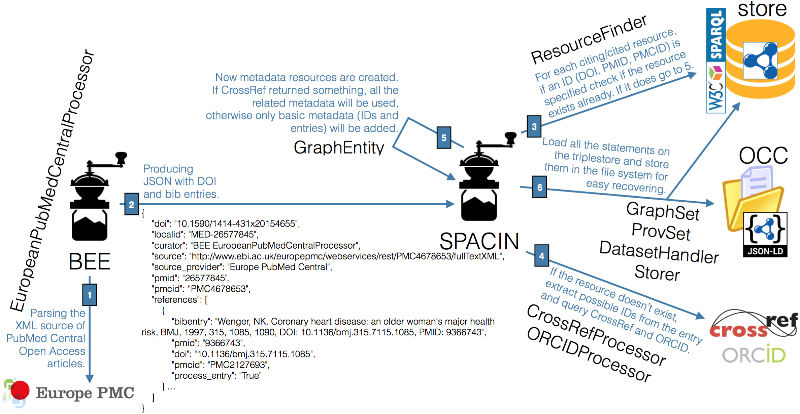
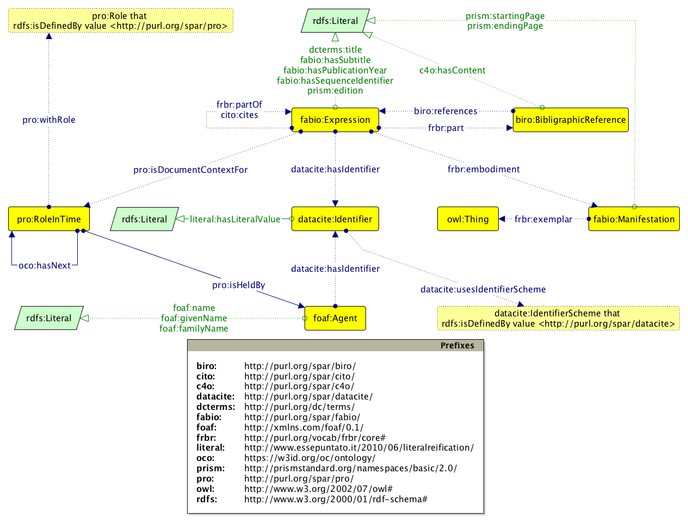

Citations are the bridges that enable people to pass from one scholarly work (e.g. a conference paper) to others (e.g. journal articles and book chapters). At present, the unrestricted travel over the entire network of bridges by using existing services requires one to pay an expensive fee, which is affordable only by rich professionals – such universities or other research institutes. The general populace is excluded.
In this paper, we introduce the OpenCitations Corpus, an open repository of scholarly citation data available in RDF and published according to the FAIR principles, which is an attempt to provide open bridges between scholarly works.
License: Creative Commons Attribution 4.0 International License.
Notes: accepted at GARR Conference 2017.
This version: https://w3id.org/people/essepuntato/papers/oc-garr2017/2017-11-10.html
Last version: https://w3id.org/people/essepuntato/papers/oc-garr2017.html
Sharing scholarly data to foster their reuse is one of the main goals of the current practices in Data Science and, more generally, in scholarly communication. While some parties are trying to boycott the unscrupulous reuse of experimental data – for instance see the research parasites
issue that generated a strong response from the scientific community –, others have recently proposed common practices and guidelines to support a better sharing and reuse of scholarly data in order to support secondary data analysis.
In particular, a FORCE11 (https://force11.org) working group has recently proposed the FAIR Data Principles . The acronym FAIR stands for Findable, Accessible, Interoperable, and Reusable, which are the main leading principles that, if applied, would facilitate the discovery, access, integration, and analysis of scholarly knowledge by humans and machines (https://www.force11.org/group/fairgroup/fairprinciples).
Citation data are among the scholarly data to which the application of FAIR principles would benefit the whole scholarly community, particularly since analysis of citation events is one of the main ways of finding key publications on a particular topic. Citation data are also important for addressing institutional goals, such as the assessment of the quality of research by means of metrics and indicators calculated from citation databases. However, the cruel reality that the most authoritative citation indexes, i.e. Scopus (https://www.scopus.com) and Web of Science (http://webofscience.com), do not follow the FAIR principles, primarily because they can only be accessed by paying significant subscription fees, which may amount to tens of thousands of euros annually per institution. In the current age, in which Open Access is considered a necessary practice in research, citation data now needs to be recognized as a part of the Commons […] and placed in an open repository
.
The Initiative for Open Citations (I4OC, https://i4oc.org) has been recently launched to promote the aforementioned idea. I4OC is a collaboration between scholarly publishers, researchers, and other interested parties to promote the unrestricted availability of scholarly citation data, initially by encouraging scholarly publishers to make open the article reference lists they already deposit to Crossref (https://crossref.org). The intent is to have citation data that are structured, separable, and open. Among the I4OC founders, one specific organization, OpenCitations (http://opencitations.net), has the further objective of employing Semantic Web technologies to create an open repository of the scholarly citation data published in RDF according to the FAIR principles.
The rest of the paper is organised as follows. In we briefly summarise the story of OpenCitations. In we describe the OpenCitations Corpus, and we focus particularly on how it complies with the FAIR data principles. Finally, in , we conclude the paper sketching out some future works.
OpenCitations has formally started in 2010 as a one-year project funded by JISC (with a subsequent extension), with David Shotton as director, who at that time was working in the Department of Zoology at the University of Oxford. The project was global in scope, and was designed to change the face of scientific publishing and scholarly communication, since it aimed to publish open bibliographic citation information in RDF and to make citation links as easy to traverse as Web links. The main deliverable of the project, among several outcomes, was the release of an open repository of scholarly citation data described using the SPAR (Semantic Publishing and Referencing) Ontologies , and named the OpenCitations Corpus (OCC), which was initially populated with the citations from journal articles within the Open Access Subset of PubMed Central.
At the end of 2015 Silvio Peroni joined OpenCitations as co-director and technical manager, with the aim of setting up a new instantiation of the Corpus based on a new metadata schema and employing several new technologies to automate the ingestion of fresh citation metadata from authoritative sources. The current instantiation of the OCC is hosted by the Department of Computer Science and Engineering (DISI) at the University of Bologna, and since the beginning of July 2016 has been ingesting, processing and publishing reference lists of scholarly papers available in Europe PubMed Central. Additional metadata for these citations are obtained from Crossref and (for authors) ORCID.
The OpenCitations Corpus (OCC) is a database of open citation data, made available in RDF . At the end of 2015, a formal collaboration between the University of Oxford and the University of Bologna was initiated to build from that initial Oxford prototype, setting up a new instantiation of the OCC based on a revised metadata schema , and employing several new technologies to automate the daily ingestion of fresh citation metadata from authoritative sources . The OCC is now one of the largest truly open collection of RDF-based citation data available on the Web, and includes more than 11.5 million citation links to around 6 million cited resources (as of 10 November 2017).
The ingestion of new data into the OCC, briefly summarised in , is curated by two Python scripts, the Bibliographic Entries Extractor, a.k.a. BEE, and the SPAR Citation Indexer, a.k.a. SPACIN. Both of these are available on the OpenCitations GitHub repository and are released as open source code according to the ISC Licence.

BEE is responsible for the creation of JSON files containing reference lists from articles in the OA subset of PubMed Central (retrieved by using the Europe PubMed Central API). SPACIN processes each JSON file created by BEE, retrieves additional metadata information about all the citing/cited articles described in it by querying the Crossref API and the ORCID API, and finally stores all the data in the OCC triplestore, which is a Blazegraph instance that makes available a SPARQL endpoint with the full text search enabled for all the entities included in the entire OCC.
In the following subsections we describe the tools and technologies used by the OCC to comply with the FAIR principles.
The OpenCitations Corpus (http://opencitations.net) uses w3id.org, a service run by the W3C Permanent Identifier Community Group (http://www.w3.org/community/perma-id/) to provide a secure, permanent URL re-direction service for Web applications, as the root URL for assigning persistent identifiers to all its entities. For example, https://w3id.org/oc/corpus/br/7295288 (which resolves to http://opencitations.net/corpus/br/7295288.html) identifies the paper referenced in within the OCC. All the citation data are described according a specific metadata model that is based on SPAR (Semantic Publishing and Referencing) Ontologies (http://www.sparontologies.net) and other standard vocabularies. All the data within the OCC are queryable by means of the OpenCitations SPARQL endpoint (https://w3id.org/oc/sparql), and dumps of the entire database are uploaded monthly to Figshare (https://figshare.com). In addition, all the original sources from which the information within the OCC has been obtained are linked by means of provenance information according to PROV-O .
All the data in the OCC can additionally be retrieved by using their unique identifiers – which are Uniform Resource Locators (URLs) – via the Hypertext Transfer Protocol (HTTP) , as in the example given in the previous paragraph. The resource metadata are made available either in human-readable HTML or in a variety of machine-readable forms (RDF/XML, Turtle or JSON-LD) via content negotiation. All the citation data within the OCC can be accessed independently from the current Web existence (or absence) of the original publications from where they have been obtained.
The data within the OCC are described by means of the Resource Description Framework (RDF) , which is the main data model for representing information in machine-readable form on the Web, and this enables qualified links from/to any entity included in the Corpus. The data are modelled in RDF according to a set of ontologies, grouped together and formalized in the OpenCitations Ontology (https://w3id.org/oc/ontology), as summarised in the diagram in . These ontologies themselves follow the FAIR principles.
The entities described within the OCC includes citing and cited bibliographic resources (conference papers, book chapters, journal articles, etc.) and their containers (academic proceedings, books, journals, etc.), the formats in which they have been embodied (digital vs. print, first and ending pages, etc.), the names and roles of relevant bibliographic agents related to these resources (author, editor, publisher, etc.), the literal textual content of each reference in the reference list of each citing bibliographic resource, and all the identifiers (DOI, ORCID, etc.) employed to identify these bibliographic resources and the agents involved. Provenance information is associated with all the entities in the OCC via PROV-O (e.g. https://w3id.org/oc/corpus/br/7295288/prov/se/1), and changes in the data can be tracked by means of SPARQL UPDATE queries . All the data included in the OCC are available under a Creative Commons public domain dedication (CC0, https://creativecommons.org/publicdomain/zero/1.0/legalcode).

In this contribution we have introduced the tools and technologies that ensure that the OpenCitations Corpus – an RDF database of open scholarly citation data – is fully compliant with the FAIR Data Principles. As an immediate future development of the project, made possible by means of recent funding from the Alfred P. Sloan Foundation (https://sloan.org), we will extend the current infrastructure and the rate of data ingest. Our goal is to increment the daily ingestion rate of citation data from ~500,000 citations per month to ~500,000 citations per day.
Richard Cyganiak, David Wood, Markus Lanthaler (2014). RDF 1.1 Concepts and Abstract Syntax. W3C Recommendation 25 February 2014. W3C. https://www.w3.org/TR/rdf11-concepts/
Riccardo Falco, Aldo Gangemi, Silvio Peroni, Fabio Vitali. (2014). Modelling OWL ontologies with Graffoo. In Proceedings of ESWC 2014 Satellite Events: 320–325. https://doi.org/10.1007/978-3-319-11955-7_42
Roy Fielding, Julian Reschke (2014). Hypertext Transfer Protocol (HTTP/1.1): Message Syntax and Routing. Request for Comments: 7230. IETF. https://tools.ietf.org/html/rfc7230
Steve Harris, Andy Seaborne. (2013). SPARQL 1.1 Query Language. W3C Recommendation 21 March 2013. W3C. https://www.w3.org/TR/sparql11-query/
Timothy Lebo, Satya Sahoo, Deborah McGuinness (2013). PROV-O: The PROV Ontology. W3C Recommendation 30 April 2013. W3C. https://www.w3.org/TR/prov-o/
Dan L. Longo, Jeffrey M. Drazen. (2016) Data sharing. New England Journal of Medicine, 374: 276–277. DOI: https://doi.org/10.1056/NEJMe1516564
Silvio Peroni (2014). The Semantic Publishing and Referencing Ontologies. In Semantic Web Technologies and Legal Scholarly Publishing: 121-193. https://doi.org/10.1007/978-3-319-04777-5_5
Silvio Peroni, Alexander Dutton, Tanya Gray, David Shotton (2015). Setting our bibliographic references free: towards open citation data. Journal of Documentation, 71 (2): 253–277. DOI: https://doi.org/10.1108/JD-12-2013-0166
Silvio Peroni, David Shotton (2016). Metadata for the OpenCitations Corpus. Figshare. DOI: https://doi.org/10.6084/m9.figshare.3443876
Silvio Peroni, David Shotton, Fabio Vitali (2016). A document-inspired way for tracking changes of RDF data. In Proceedings of Drift-a-LOD 2016: 26–33 http://ceur-ws.org/Vol-1799/Drift-a-LOD2016_paper_4.pdf
Silvio Peroni, David Shotton, Fabio Vitali (2017). One year of the OpenCitations Corpus: Releasing RDF-based scholarly citation data into the Public Domain. In Proceedings of ISWC 2017: 184–192 https://doi.org/10.1007/978-3-319-68204-4_19
David Shotton (2013). Open citations. Nature, 502 (7471): 295–297. DOI: https://doi.org/10.1038/502295a
Mark D. Wilkinson, Michel Dumontier, IJsbrand Jan Aalbersberg, et al. (2016). The FAIR Guiding Principles for scientific data management and stewardship. Scientific Data, 3: 160018. DOI: https://doi.org/10.1038/sdata.2016.18